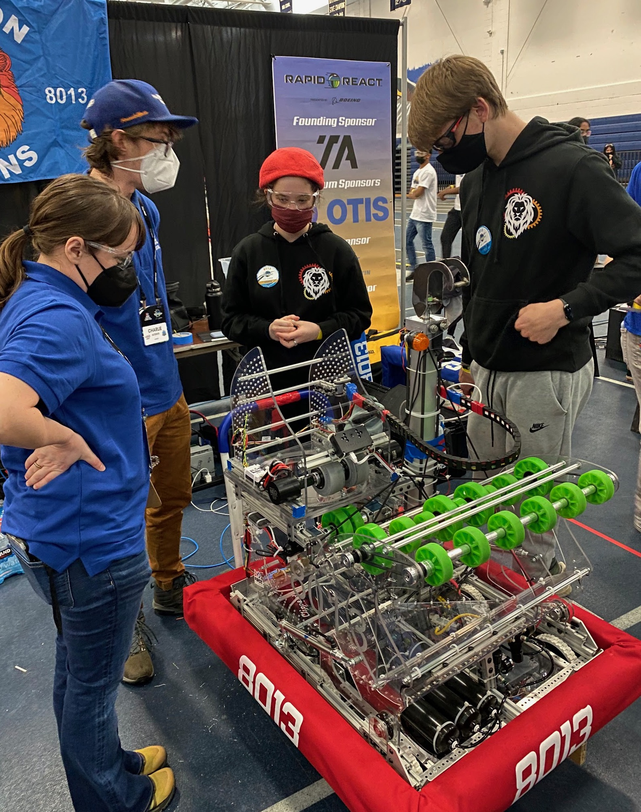
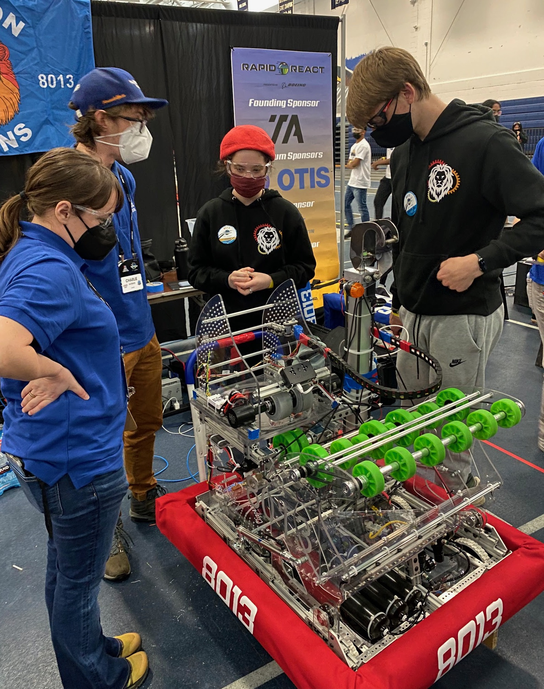
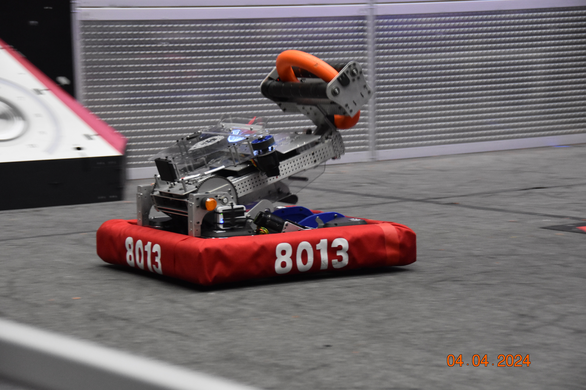
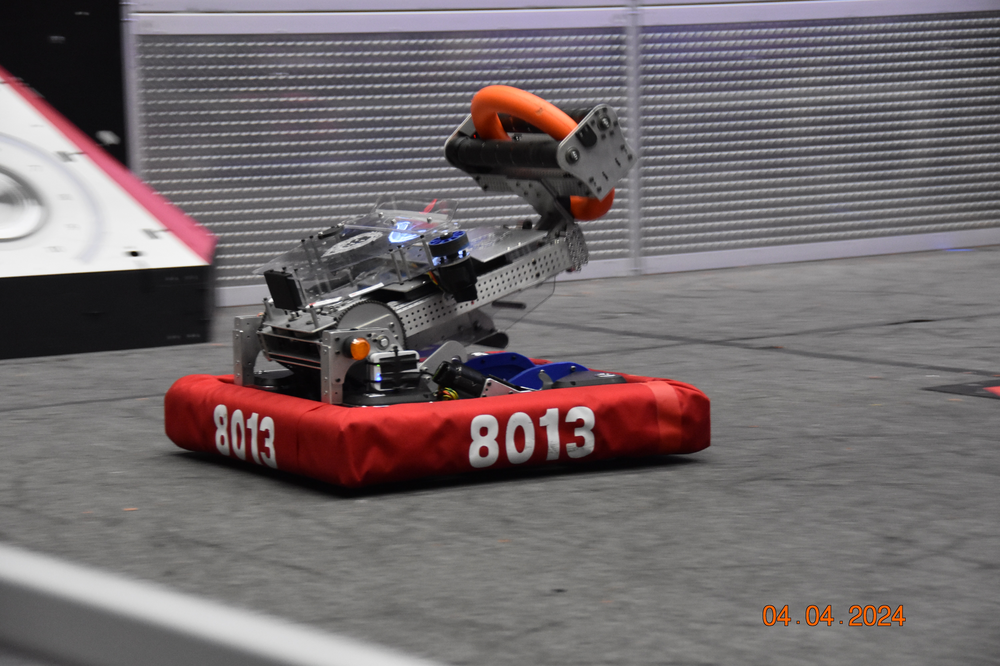
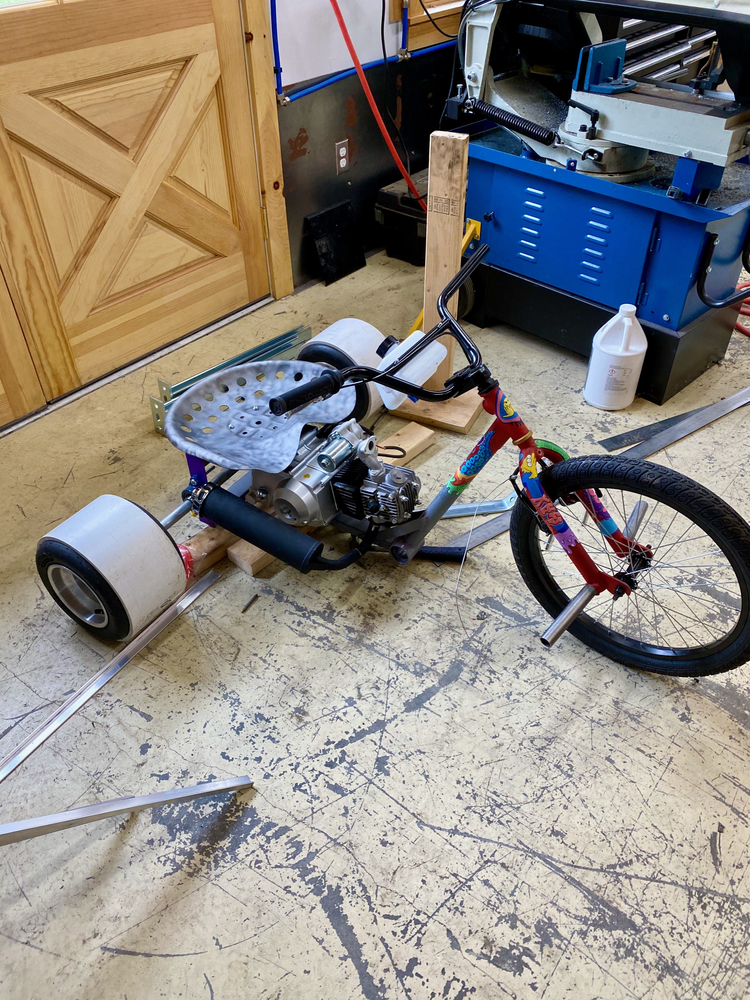
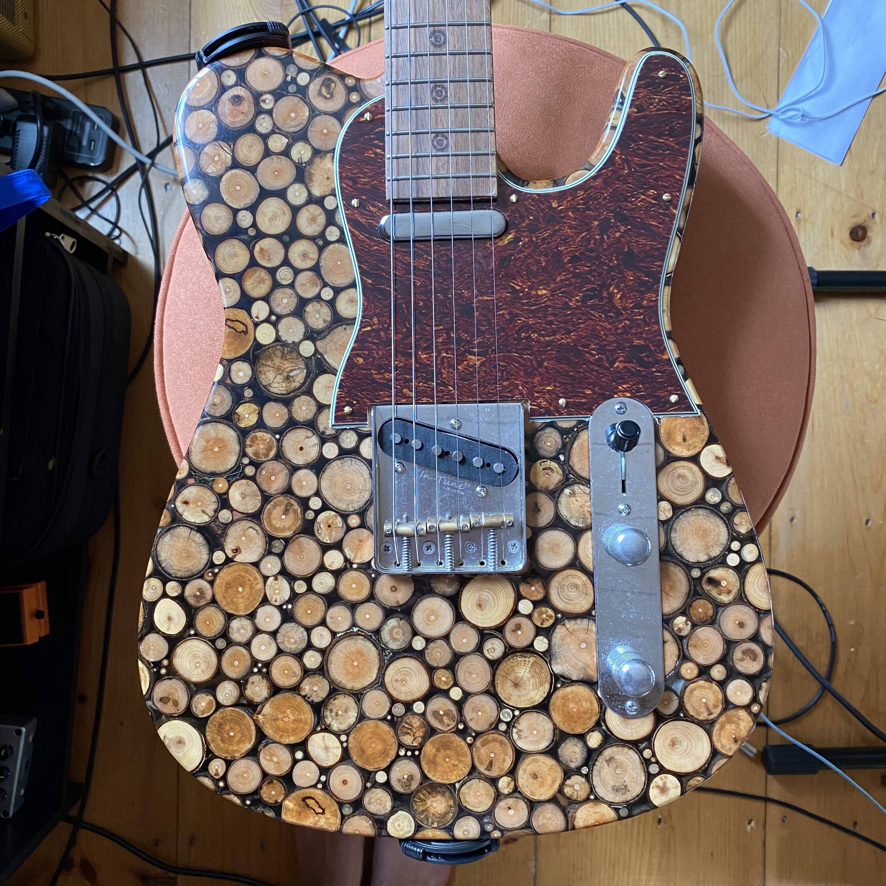
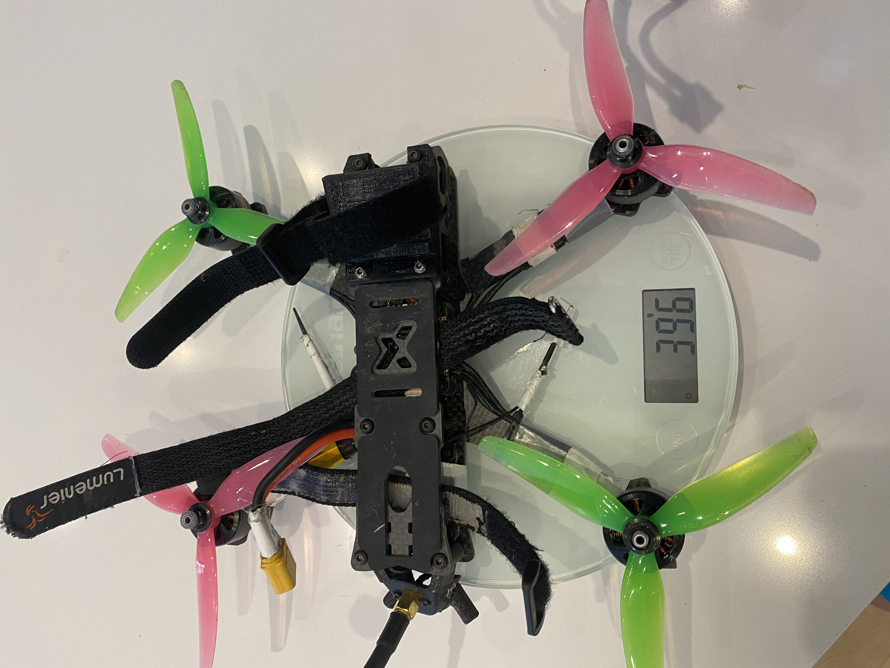
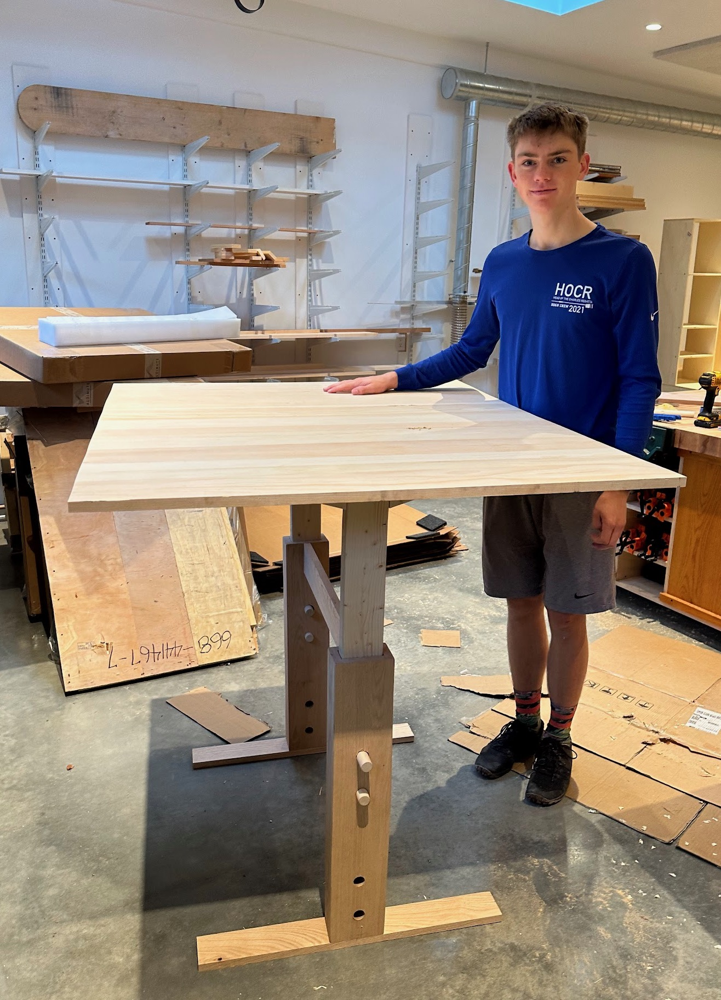

Welcome to my website!
Hi! I'm Max Conine. I'm an Engineering Major at Harvey Mudd College.
I'm from Boston MA. I love playing guitar, biking, building things, outdoor activities like climbing and skiing, and peanut butter and jelly sandwiches.
Below are some projects I've worked on. Click each image to find out more
My Projects

Exploravist
This is where I'm currently working as an Embedded Software Engineer. I write C code in ESP-IDF that interacts with the ESP32 device inside the ExploraVist headset. This allows the user to press a button and the device will describe what the user is looking at. The website to ExploraVist is linked down below
A video of the ExploraVist product demo

FIRST Robotics 8013
In high school, I was fascinated by FIRST robotics. During the build season I would spend 30+ hour weeks working on the robot. I was one of the founding members of our team along with two of my friends. We went from knowing nothing at all and being complete beginners in 2020, to 4 years later winning the New England Championships. It's amazing how much I learned from this program and how far hard work can get you. Below I've included pictures from the robots we built from each year and a few pictures of an offseason swerve robot I spent one summer working on. You can see how our robots evolve over time.
 

 



A video of the 4 note autonomous routine I developed:
A video of our engame sequence called shooting the trap which we could do very quickly

Motorized Drift Trike
Built a motorized drift trike using a dirt‑bike engine.


This is a video of me drifting around on the drift trike I made

Logic Gate Demo Board
In my Intro to Engineering Design and Manufacturing class, my team designed and built a logic gate demo board for our final project. This board is used to assist in teaching the Digital Electronics & Computer Architecture class at Harvey Mudd. We learned how to use integrated circuits and make a timer circuit when making this board. I really enjoyed doing the wiring for the electrical part of the board.


Here is a video of me demonstrating the board

Guitar Making
I came up with the idea to build a guitar using resin and a bunch of sticks. I call it the Stick Guitar. It's a functional telecaster style guitar with the body made out of chopepd up sticks. It looks very cool and even plays well


I designed this bass guitar in Fusion 360 and then cut it on a ShopBot CNC milling machine with help from my dad. The other components on the bass are from StewMac. I played this bass in my high school's jazz ensemble for 2 years, and it worked great! My sister pained a bass fish on the front so I named it the Bass Bass guitar



FPV Drone Hobby
One of my hobbies is building racing & cinematic FPV drones. I learned how to build them through YouTube videos and online documentation. I learned how these drones work and how to tune flight controllers and set each drone up. I have some videos of myself flying them around on my YouTube channel


Bike Scooter
This is a project I call a Bike Scooter. It's made by cutting apart an old bicycle and welding a custom scooter deck on. I designed and fabricated it. I went through two iterations as shown in these photos.


Go Kart Conversion
During my High School senior spring I converted a motorized go kart into an electric kart with a group of friends. This was a fun project because at the end of it we got to drive it around the Boston alley. We were also featured in our school's newspaper as our project was quite unique



Puzzle Club Table
I made a height‑adjustable table for the Puzzle Club at my high school.

Contact Me
Email: mconine@g.hmc.edu
LinkedIn: linkedin.com/in/max-conine-1924a2298
GitHub: github.com/maxconine
YouTube: youtube.com/@maxconine7127